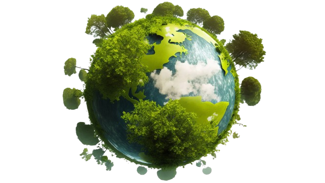
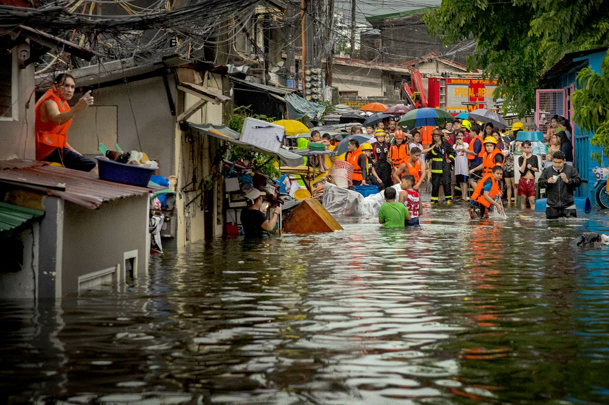
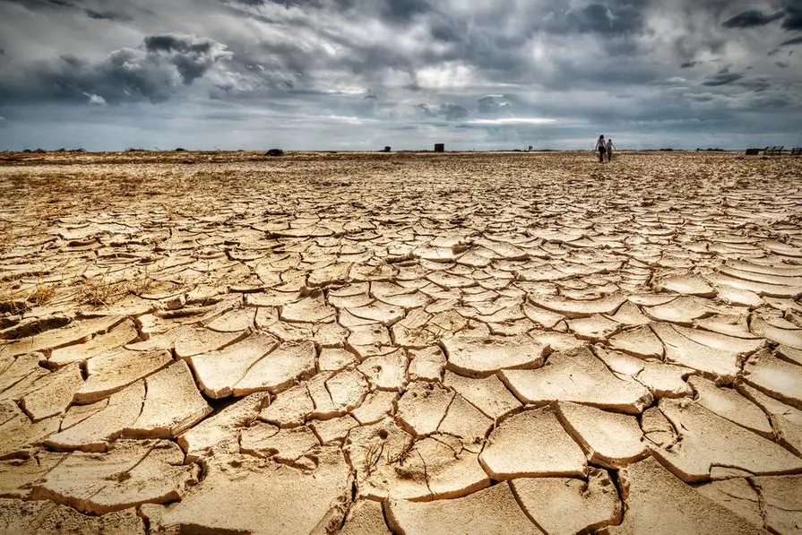
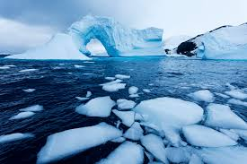
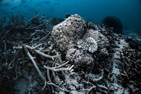
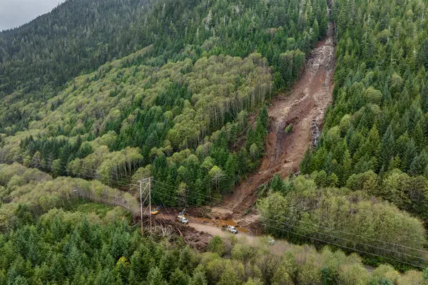
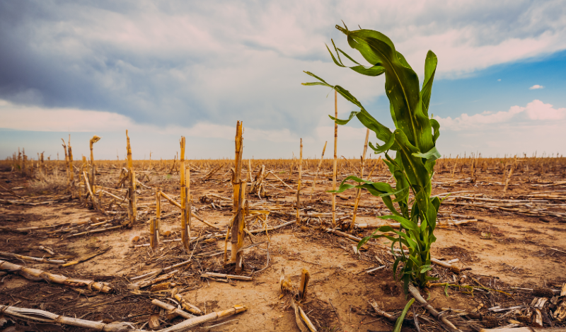
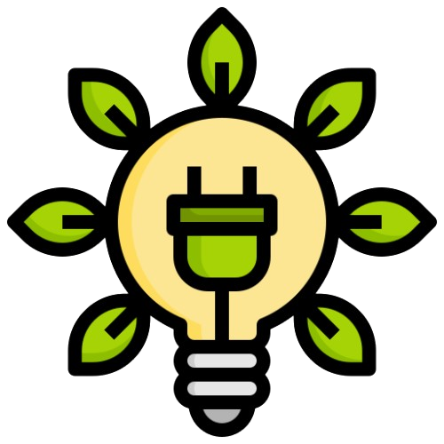
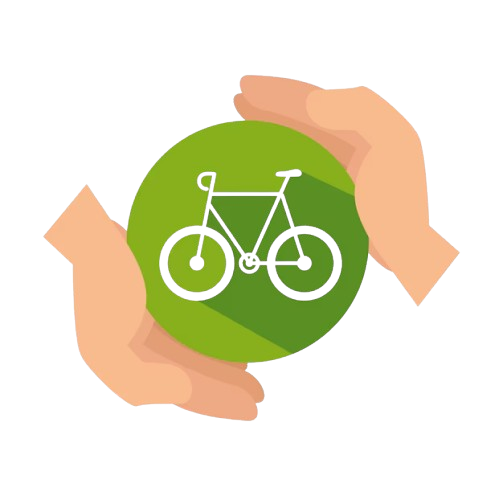
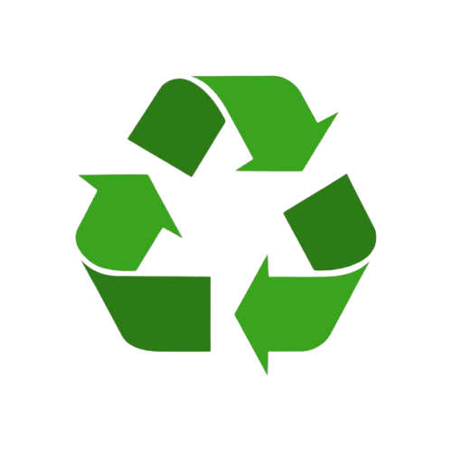

Act for Climate: Building a Sustainable Future
Think green, act now, sustain tomorrow
Understanding Climate Change
News around climate change can bring feelings of eco-anxiety. We explore how we can protect our mental wellbeing and feel empowered to take positive action for the planet.
Climate change is a term referring to the long-term shifts in temperatures and weather patterns, which is mainly caused by human activities, including burning fossil fuels, deforestation, and industrial processes. The process of these activities releases greenhouse gases like carbon dioxide (CO2) and methane into the atmosphere, thereby trapping heat and disrupting the Earth's climate system.
Read More

Disaster Caused by Climate Change





`


What We Can Do
Promote Renewable Energy Solutions
Transitioning to renewable energy sources such as solar, wind, and hydroelectric power is one of the most effective ways to combat climate change. Unlike fossil fuels, these energy sources produce little to no greenhouse gas emissions, significantly reducing our carbon footprint. Governments, businesses, and individuals can support this shift by investing in renewable energy technologies and advocating for policies that prioritize clean energy adoption. Additionally, incorporating solar panels, wind turbines, and energy-efficient appliances in homes and communities can lead to long-term energy cost savings and a healthier planet for future generations.


Adopt Sustainable Transportation Methods
Transportation is one of the largest contributors to greenhouse gas emissions, primarily from cars, buses, trucks, and airplanes. Shifting to sustainable transportation methods such as walking, cycling, and using public transportation can significantly reduce individual carbon footprints. Cities and governments can encourage this shift by investing in public transit infrastructure, building dedicated bike lanes, and offering incentives for electric vehicle (EV) purchases. Companies can also promote telecommuting and hybrid work schedules to reduce the number of vehicles on the road. Supporting sustainable mobility not only cuts emissions but also reduces traffic congestion and improves air quality in urban areas.
Support Reforestation and Forest Conservation
Forests play a vital role in the fight against climate change by acting as natural carbon sinks, absorbing carbon dioxide from the atmosphere. However, deforestation for agriculture, logging, and urban development threatens this natural defense. Reforestation efforts, such as planting trees and restoring degraded lands, can help rebuild these ecosystems and increase their ability to capture CO2. Governments, NGOs, and individuals can support forest conservation by funding reforestation projects, protecting wildlife habitats, and promoting sustainable agriculture and logging practices. By protecting and expanding forests, we not only fight climate change but also protect biodiversity, improve air quality, and create sustainable livelihoods for local communities.

Practice Sustainable Consumption and Waste Reduction
The "reduce, reuse, recycle" approach remains one of the simplest and most effective ways to combat climate change. Reducing waste sent to landfills prevents the release of methane, a potent greenhouse gas that accelerates global warming. Individuals can minimize waste by avoiding single-use plastics, choosing products with less packaging, and supporting brands committed to sustainable production. Composting organic waste further reduces landfill contributions while enriching soil health. Businesses can play a role by adopting circular economy models, where materials are reused, remanufactured, or recycled. By making mindful consumption choices, we can reduce resource extraction, limit pollution, and foster a more sustainable economy.
Advocate for Climate-Friendly Policies and Legislation
Systemic change is essential to combat climate change on a global scale. While individual actions matter, strong policies and regulations can drive large-scale transformations. Citizens can advocate for climate-friendly policies by supporting political leaders, organizations, andlogo-main initiatives that prioritize environmental protection. This can include pushing for stricter emissions regulations, promoting renewable energy subsidies, and encouraging companies to adopt sustainable practices. Grassroots movements and climate activism have the power to influence government decisions, corporate behavior, and international agreements. By making our voices heard, we can demand the systemic changes needed to protect the planet for future generations.